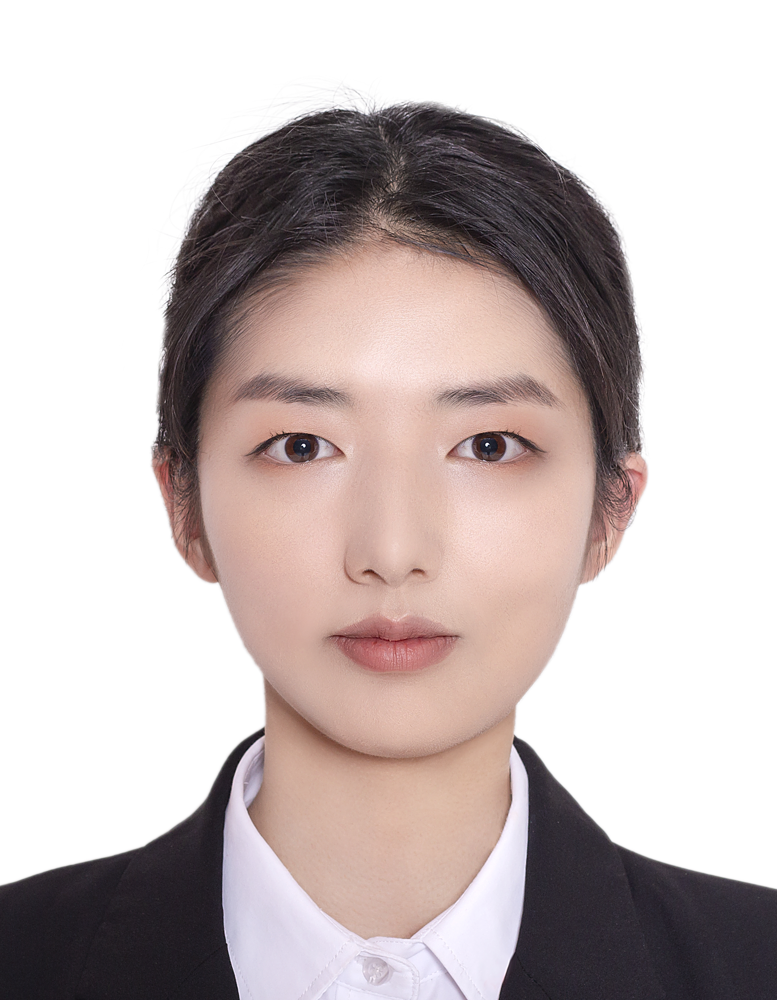

Yang Wenwen

Date of Birth: 1998
Place of Birth: Sichuan Province, China
Education
-
Media Art Design - Nagoya University of Arts Graduate School of Design (2023 - Present)
-
Bachelor of Economics - Sichuan University, China (2017 - 2021)
Experience
-
Artist Residency at Cité internationale des arts
Aug 2024 - Oct 2024
- Participating as an artist-in-residence at Cité internationale des arts in Paris from August 2 to September 27, 2024.
- Engaging in artistic exchanges with fellow residents and showcasing my work through weekly Open Studio events.
Photography Featured in Photo Book
May 2022
- Contributed photographs to XIANGYUE , a re-nowned Chinese independent art platform specializing in photography.
- Several of my submitted photographs were successfully selected for inclusion in the photo book titled "The Village of Nowhere".
Statement
I work primarily with photography as my medium, exploring the convergence of human emotions, traumatic memories, and bodily sensations. My research is informed by psychoanalytic theories, delving deep into the connection between our inner worlds and the external physicality of the universe.
Currently, I am an art graduate student specializing in Media Art Design, and I am also an artist-in-residence at Cité internationale des arts in Paris. While my base is in Nagoya, Japan, I am currently living and working in Paris as part of this residency.
Skills
-
Language
- Chinese: Native
- English: Business Level (7.0 in Ielts Test, 950 in Toeic Test)
- Japanese: Business Level (N1 Certificate)
Software
- Visual Tools: Adobe Photoshop, Lightroom, Indesign
- Office Tools: Microsoft Word, Excel, PowerPoint
Awards and Certificates
- Scholarship of the Ichihara International Scholarship Foundation (2024)
Other